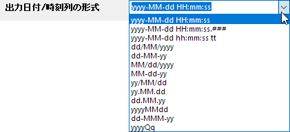

| 再計算
|
再計算モードを指定します。
|
| ソース時間
|
時間間隔の時間ソースとして使用される範囲を指定します。
|
| ソースデータ
|
アンスタックするデータ値の範囲を指定します。
|
| 時間間隔
|
オプション：
|
| 開始値
|
各アンスタックグループの開始時刻の値を指定します。
- 時間間隔として年を選択すると、指定した日付を開始値として設定できます。形式は MM/ddまたは JAN または 1（月数）です。
- 時間間隔として月を選択すると、指定した日を開始値として設定できます。形式: 1-28。
- 時間間隔として週を選択すると、指定した曜日インデックスを開始値として設定できます。形式: 1-7。
- 時間間隔として日を選択すると、指定した時間と分を開始値として設定できます。形式: HH:mm (13:00), 13, 1pm 。
- 時間間隔として時間を選択すると、指定した分と秒を開始値として設定できます。形式: mm:ss。
- 時間間隔として分を選択すると、指定した秒数を開始値として設定できます。形式: 0-60。
|
| 終了値
|
アンスタックした各グループの終了時間の値を指定します。開始値と同様の形式です。
- 時間間隔として年を選択すると、指定した日付を終了値として設定できます。形式は MM/ddまたは JAN または 1（月数）です。
- 時間間隔として月を選択すると、指定した日を終了値として設定できます。形式: 1-31。
- 時間間隔として週を選択すると、指定した曜日インデックスを終了値として設定できます。 形式: 1-7。
- 時間間隔として日を選択すると、指定した時間と分を終了値として設定できます。形式: HH:mm (13:00), 13, 1pm 。
- 時間間隔として時間を選択すると、指定した分と秒を終了値として設定できます。形式: mm:ss。
- 時間間隔として分を選択すると、指定した秒数を終了値として設定できます。形式: 0-60。
|
| 出力ワークシート
|
結果テーブルを出力する場所を指定します。
|
| 追加ラベル行
|
年/月/日付/時間/分などの値にラベル行を追加します。
|
| 出力日付/時刻列の形式
|
ドロップダウンリストで日付/時刻列の形式を選択します。

|